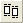

グラフページの左上隅にあるレイヤアイコンをクリックしながら、CtrlキーまたはShiftキーを押すことで、マルチレイヤグラフでレイヤを選択するする方法もあります。
オブジェクト編集ツールバーは、1つ以上のグラフオブジェクトが、アクティブなウィンドウで選択されている場合か、たとえ1つ以上のレイヤがグラフページに選択されていても、1つの画像がレイアウトページで選択されている場合に有効です。このツールバーには、選択しているオブジェクト/画像の整列を行ったり、オブジェクト/画像/レイヤの描画順を変更するボタンがあります。 オブジェクトをまとめて移動したり、整列するために、オブジェクトをグループ化するボタンもあります。 さらに、データプロットに対するオブジェクトの相対的な描画順序を変更するボタンもあります。
グラフページの左上隅にあるレイヤアイコンをクリックしながら、CtrlキーまたはShiftキーを押すことで、マルチレイヤグラフでレイヤを選択するする方法もあります。 |
単一のグラフレイヤが選択されている場合、このツールバーをクリックすると、ページを基準にして位置が調整されます。 |
| |
選択しているすべてのオブジェクトを最後に選択したオブジェクトの左端にそろえます。 |
| |
選択しているすべてのオブジェクトを最後に選択したオブジェクトの右端にそろえます。 |
| |
選択しているすべてのオブジェクトを最後に選択したオブジェクトの上端にそろえます。 |
|
選択しているすべてのオブジェクトを最後に選択したオブジェクトの下端にそろえます | |
|
選択しているすべてのオブジェクトを最後に選択したオブジェクトの中心で垂直にそろえます。 | |
| |
選択しているすべてのオブジェクトを最後に選択したオブジェクトの中心で水平にそろえます。 |
|
選択されているオブジェクトの上端と下端の位置は保持し、それぞれ等しい間隔で分布するようにオブジェクトを垂直方向に移動します。 | |
|
選択されているオブジェクトの右端と左端の位置は保持し、それぞれ等しい間隔で分布するようにオブジェクトを水平方向に移動します。 | |
| |
選択しているすべてのオブジェクトを最後に選択したオブジェクトの水平方向の長さにそろえます。 |
|  |
選択しているすべてのオブジェクトを最後に選択したオブジェクトの垂直方向の長さにそろえます。 |
| |
選択しているオブジェクトを前面に移動します。 |
| |
オブジェクトを前面に移動します。 |
|
オブジェクトを背面に移動します。 | |
| |
選択しているオブジェクトを最背面に移動します。 |
| |
選択しているオブジェクトをデータプロットの手前で描画します |
| |
選択しているオブジェクトをデータプロットの奥側で描画します。 |
| |
選択しているオブジェクトをグループ化します。 |
| |
選択しているオブジェクトのグループを解除します。 |